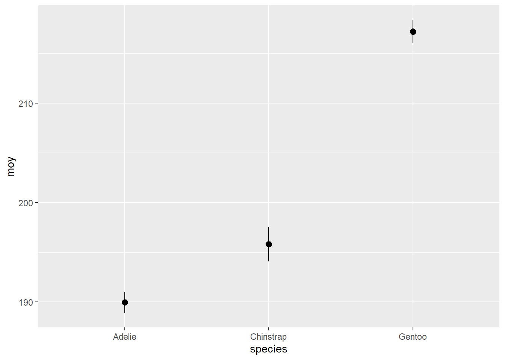

Échantillonnage et estimation de paramètres
15 septembre 2021
Dans ce laboratoire, vous appliquerez les concepts vus lors des deux derniers cours, en plus d’apprendre à créer des rapports d’analyse avec R Markdown.
Introduction à R Markdown
Créer un document R Markdown
Le format R Markdown permettent de combiner du texte, des blocs de code R et leurs résultats dans un même document. Nous présenterons brièvement la création et l’édition de ces document aujourd’hui, mais vous pouvez aussi consulter des tutoriels plus complets comme ceux-ci:
- https://rmarkdown.rstudio.com/lesson-1.html (site officiel, en anglais)
- http://larmarange.github.io/analyse-R/rmarkdown-les-rapports-automatises.html (en français).
Pour créer un nouveau document R Markdown à partir de RStudio, allez au menu File -> New File -> R Markdown…. Choisissez le format de sortie Word (.docx).
L’avantage du format Word est qu’il est possible d’éditer le document résultant dans Word. C’est le format recommandé pour la remise des travaux dans ce cours. Le format PDF est aussi utile pour la production de documents, tandis que le format HTML permet de diffuser des résultats sur le web. Notez que tout le matériel de ce cours est produit avec R Markdown!
Le fichier créé contient déjà un exemple de texte R Markdown. Sauvegardez le fichier (donnons-lui le nom exemple.Rmd) et appuyez sur le bouton Knit pour produire le document Word.

En lisant la description des différentes parties du document, comparez le fichier .Rmd et le résultat .docx.
Composantes des documents R Markdown
En-tête
L’en-tête du fichier contient des informations comme le titre, la date et le format de sortie. Elle commence et se termine par un bloc de trois tirets ---.
Blocs de code R
Les sections de code R ont un arrière-plan gris dans le document affiché dans RStudio. Elles commencent et se terminent avec trois accents graves ```.
Le raccourci Ctrl+Alt+I insère automatiquement un nouveau bloc de code dans le document.
Le premier bloc de code (qui contient knitr::opts_chunk$set(echo = TRUE)) sert à spécifier certains paramètres. Vous pouvez l’ignorer pour l’instant.
Regardez le deuxième bloc qui contient summary(cars). À droite des trois accents graves sur la première ligne, vous trouvez l’en-tête du bloc entre accolades: {r cars}. Elle commence avec r pour indiquer qu’il s’agit de code R, tandis que cars est le nom du bloc. (Il est optionnel de nommer les blocs.) La flèche verte tout à fait à droite permet d’exécuter le code et d’afficher le résultat.
Regardez maintenant le fichier Word. Vous y trouverez le bloc de code suivi du résultat.
Le deuxième bloc de code plot(pressure) produit le graphique que vous voyez dans le document Word. L’en-tête du bloc contient l’option echo = FALSE ce qui signifie que le code est invisible, seul le résultat apparaît dans Word.
Texte Markdown
Le reste du document est composé de texte avec quelques indications du langage Markdown pour la mise en page.
Voici quelques exemples d’indications de mise en page et le résultat.
# En-tête de niveau 1
En-tête de niveau 1
## En-tête de niveau 2
En-tête de niveau 2
### En-tête de niveau 3
En-tête de niveau 3
Texte en *italique*
Texte en italique
Texte en **gras**
Texte en gras
- Élément de liste
- Élément de liste
- Élément de liste
- Élément de liste
Vous pouvez maintenant remplacer le code et le texte de l’exemple par vos réponses aux exercices qui suivront.
Exercices
1. Caractéristiques des manchots de trois espèces
Pour cet exercice, nous utiliserons un jeu de données qui contient différentes mesures prises sur 344 manchots de l’archipel de Palmer (Antarctique), provenant de trois espèces: le manchot Adélie, le manchot à jugulaire (Chinstrap) et le manchot papou (Gentoo).
Pour charger un jeu de données contenu dans un package, vous devez d’abord charger le package, puis lire le jeu de données avec la fonction data. Ici, nous voulons charger le jeu de données penguins du package palmerpenguins.
library(palmerpenguins)
data(penguins)
head(penguins)## # A tibble: 6 x 8
## species island bill_length_mm bill_depth_mm flipper_length_~ body_mass_g sex
## <fct> <fct> <dbl> <dbl> <int> <int> <fct>
## 1 Adelie Torge~ 39.1 18.7 181 3750 male
## 2 Adelie Torge~ 39.5 17.4 186 3800 fema~
## 3 Adelie Torge~ 40.3 18 195 3250 fema~
## 4 Adelie Torge~ NA NA NA NA <NA>
## 5 Adelie Torge~ 36.7 19.3 193 3450 fema~
## 6 Adelie Torge~ 39.3 20.6 190 3650 male
## # ... with 1 more variable: year <int>- Nous allons d’abord visualiser une partie des données. À l’aide de ggplot2, produisez un nuage de points reliant la longueur de la nageoire (
flipper_length_mm) à la longueur du bec (bill_length_mm) des manchots, en différenciant les espèces (species) par un code de couleurs.
Solution
library(ggplot2)
library(dplyr)
ggplot(penguins, aes(x = flipper_length_mm, y = bill_length_mm, color = species)) +
geom_point()
Comment procéderiez-vous pour calculer la moyenne de flipper_length_mm et son intervalle de confiance à 95% pour chaque espèce?
- De quelles quantités avez-vous besoin pour ce calcul?
La moyenne, l’erreur-type (qui dépend de l’écart-type et du nombre d’observations) et les probabilités de la distribution \(t\) à \(p\) = 0.025 et \(p\) = 0.975.
- En utlisant le package dplyr, calculez la moyenne, le taille de l’échantillon, l’écart-type et l’erreur-type de la moyenne de
flipper_length_mmpour les manchots de chaque espèce. Sauvegardez le résultat dans un tableau de donnéesfl_stat.
Indices
- Conservez seulement les rangées où
flipper_length_mmn’est pas une valeur manquante (condition!is.na(flipper_length_mm)). - Dans
summarize, vous pouvez utiliser la fonctionn()pour compter le nombre de rangées par groupe, ex.:summarize(n = n(), ...). Cette option est préférable à la fonctioncountlorsque vous voulez calculer à la fois le nombre d’observations et d’autres statistiques sommaires.
Solution
Après avoir utilisé group_by et summarize pour calculer la taille de l’échantillon, la moyenne et l’écart-type par espèce, nous utilisons mutate pour calculer l’erreur-type à partir de l’écart-type et de la taille de l’échantillon.
fl_stat <- penguins %>%
filter(!is.na(flipper_length_mm)) %>%
group_by(species) %>%
summarize(n = n(), moy = mean(flipper_length_mm),
ecart_type = sd(flipper_length_mm)) %>%
mutate(err_type = ecart_type / sqrt(n))
fl_stat## # A tibble: 3 x 5
## species n moy ecart_type err_type
## <fct> <int> <dbl> <dbl> <dbl>
## 1 Adelie 151 190. 6.54 0.532
## 2 Chinstrap 68 196. 7.13 0.865
## 3 Gentoo 123 217. 6.48 0.585- Durant le cours sur les distributions statistiques, nous avons vu les fonctions
rnorm,dnorm,pnormetqnormqui permettent de calculer des valeurs à partir de la distribution normale. Des fonctions similaires existent pour la distribution \(t\) (rt,dt,pt,qt). Utilisons la fonctionqt(p, df)pour déterminer l’intervalle correspondant à 95% de la probabilité. Quelles valeurs de \(p\) (la probabilité cumulative) utiliser? Quel nombre de degrés de liberté (\(df\)) en fonction de la taille de l’échantillon \(n\)?
\(p =\) 0.025 et 0.975, \(df = n - 1\).
- Créez deux nouvelles colonnes dans
fl_statcontenant le minimumic_minet le maximumic_maxde l’intervalle de confiance. Définissez ces colonnes en fonction de la moyenne, de l’erreur-type et de \(n\).
Solution
On utilise mutate pour créer de nouvelles colonnes et on calcule à quoi elles doivent correspondre, soit la valeur minimale et maximale de l’intervalle de confiance. Ces valeurs se calculent comme la moyenne plus la valeur des quantiles appropriés de la distribution \(t\) (fonction qt avec les paramètres décrits à la réponse en d) fois l’erreur-type.
fl_stat <- fl_stat %>%
mutate(ic_min = moy + qt(0.025, df = n - 1) * err_type,
ic_max = moy + qt(0.975, df = n - 1) * err_type)
fl_stat## # A tibble: 3 x 7
## species n moy ecart_type err_type ic_min ic_max
## <fct> <int> <dbl> <dbl> <dbl> <dbl> <dbl>
## 1 Adelie 151 190. 6.54 0.532 189. 191.
## 2 Chinstrap 68 196. 7.13 0.865 194. 198.
## 3 Gentoo 123 217. 6.48 0.585 216. 218.- Finalement, utilisez le type de graphique
geom_pointrange(intervalle de points) de ggplot2 pour visualiser l’intervalle de confiance pour chaque espèce. Ce type de graphique demande la spécification dey(point central),ymin(minimum de l’intervalle) etymax(maximum de l’intervalle) dans la fonctionaes.
Solution
On veut un graphique qui présente les moyennes et les intervalles de confiance ayant pour bornes ic_min et ic_max.
ggplot(fl_stat, aes(x = species, y = moy, ymin = ic_min, ymax = ic_max)) +
geom_pointrange()
2. Simulation d’échantillonnage stratifié
Pour cet exercice, nous comparerons l’échantillonnage simple et stratifié à partir d’échantillons simulés du tableau de données penguins. Voici la distribution des longueurs de nageoires pour chaque espèce dans le tableau de données original. Notez que nous avons créé un nouveau tableau fl qui contient seulement les individus où la longueur de nageoire a été mesurée.
fl <- filter(penguins, !is.na(flipper_length_mm))
ggplot(fl, aes(x = species, y = flipper_length_mm)) +
geom_boxplot()
Dans dplyr, la fonction sample_n(tab, n) retourne un tableau de données contenant n observations choisies au hasard du tableau tab. On peut aussi l’utiliser avec group_by pour choisir n observations par groupe.
- Créez deux fonctions
fl_aleaetfl_strat. La première fonction choisit 30 observations au hasard defl, puis retourne la moyenne deflipper_length_mmpour ces observations. La deuxième choisit 10 observations au hasard de chacune des trois espèces, plus retourne la moyenne deflipper_length_mm(globale, pas par espèce). Assurez-vous que chacune des deux fonctions retourne un vecteur de longueur 1.
Note: Vous pouvez écrire ces fonctions sans arguments (parenthèses vides après function), comme dans l’exemple ci-dessous.
fl_alea <- function() {
# Insérer code de la fonction ici
}Solution
fl_alea <- function() {
samp <- sample_n(fl, 30)
mean(samp$flipper_length_mm)
}
fl_strat <- function() {
samp <- group_by(fl, species) %>%
sample_n(10)
mean(samp$flipper_length_mm)
}
fl_alea()## [1] 202.3667fl_strat()## [1] 201.3- Générez un vecteur 1000 résultats de chaque fonction avec
replicate, comme suit:
rep_alea <- replicate(1000, fl_alea())
rep_strat <- replicate(1000, fl_strat())- Calculez l’erreur-type de chaque moyenne (à partir des écarts-type de
rep_aleaetrep_strat). Avant de faire le calcul, pouvez-vous deviner quelle méthode sera la plus précise? Pour quelle raison?
Solution
sd(rep_alea)## [1] 2.438234sd(rep_strat)## [1] 1.155974L’erreur-type de la moyenne stratifiée (écart-type de rep_strat) est environ 2 fois plus faible que celle de la moyenne aléatoire (écart-type de rep_alea), soit 1.2 vs 2.4. Cela est dû au fait que la longueur des nageoires est plus variable entre les espèces qu’entre individus d’une même espèce.